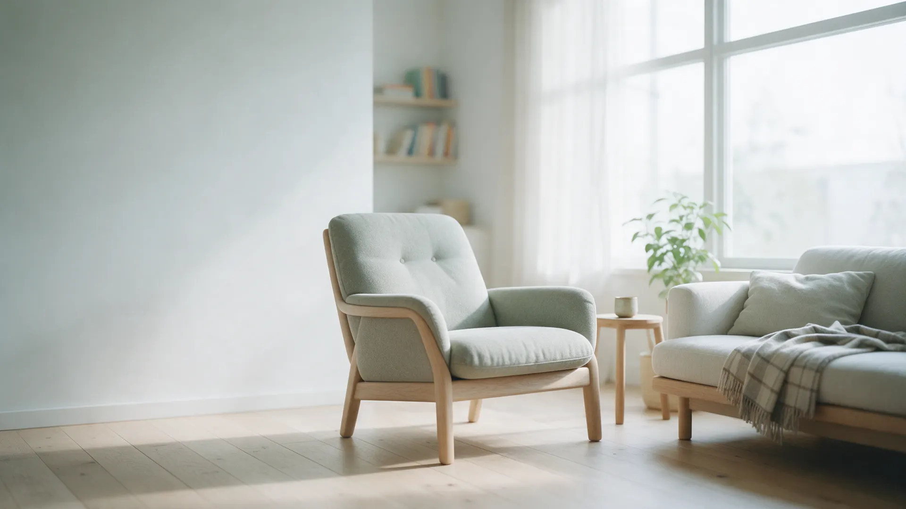
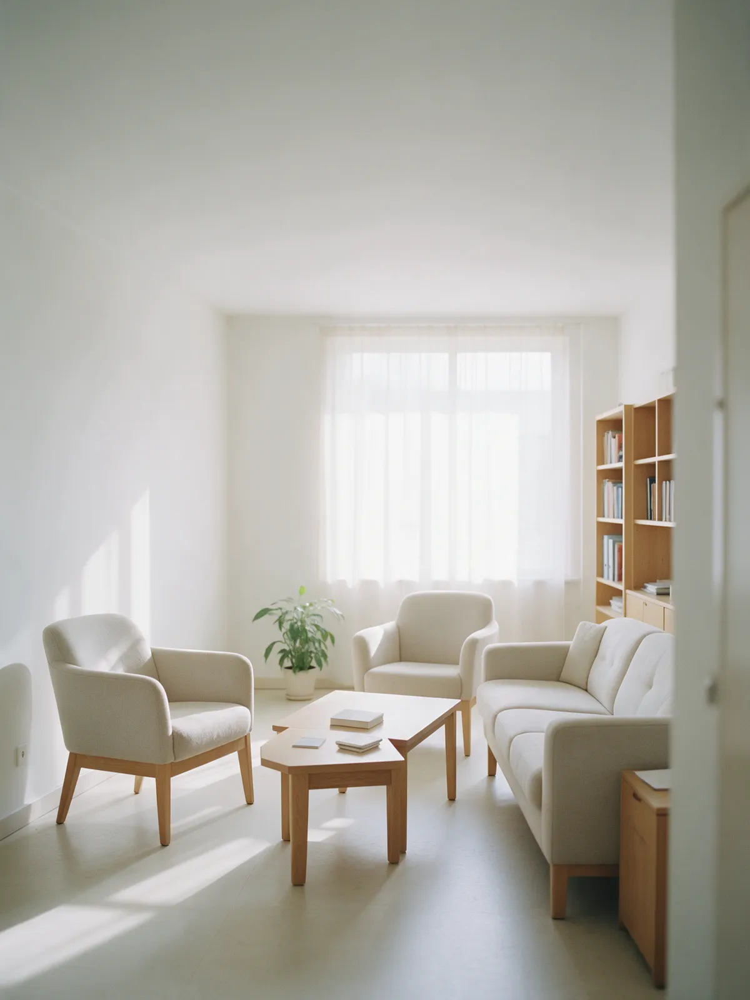
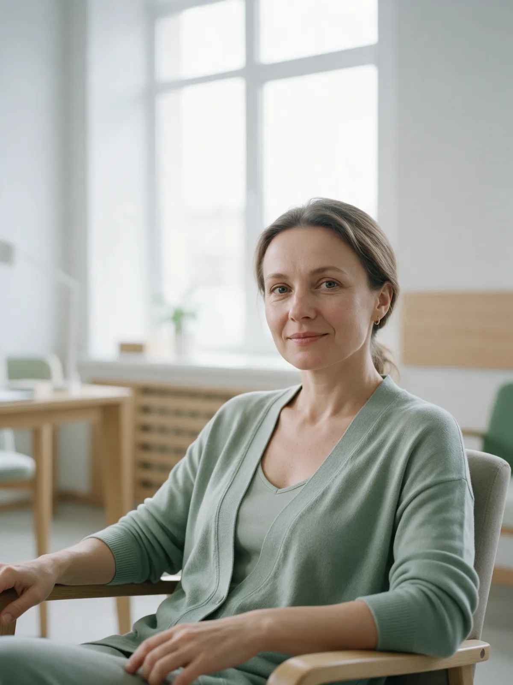
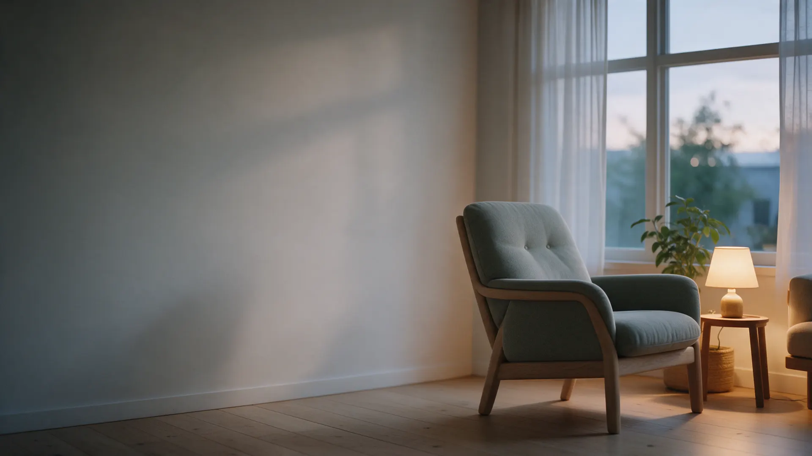

Работаю с тревогой, выгоранием и отношениями. Вопросы «зачем это» и «что будет дальше» здесь нормальные.

Приём по записи
Пн–Сб 9:00–20:00
Очно и онлайн, в своём темпе
Психолог «Опора»
Психолог в Казани: помогу разобраться, что происходит
Тревога, выгорание, отношения, усталость без понятной причины. Первая встреча – спокойный разговор без обязательств. Цена озвучена заранее.
- Первая встреча ни к чему не обязывает
- Цена озвучена до начала
- Конфиденциально, без осуждения
- Очно и онлайн, по записи
Пять вопросов перед первой встречей
Отвечаем на них здесь, пока вы дома, а не на пороге кабинета.
- 1Что со мной происходит?
- 2Что будет на встрече?
- 3Сколько это стоит?
- 4Кто со мной работает?
- 5Когда можно прийти?
Услуги
Форматы работы: от первой встречи до сопровождения
Взрослым, очно в кабинете или онлайн. Сколько встреч понадобится, обсуждаем на первом разговоре.
Индивидуальная консультация
Разбираем запрос без спешки. Обычно около часа.
уточнитьТревога и панические состояния
Понимаем, как это работает именно у вас, и что делать в момент приступа.
уточнитьОтношения и семья
Работаем с парой или отдельно с каждым. Учимся слышать друг друга, а не выяснять, кто прав.
уточнитьВыгорание и кризис
Разбираем нагрузку, границы и решения, которые даются с трудом.
уточнитьОнлайн-встречи
Те же встречи по видеосвязи, если из города или по времени так удобнее.
уточнить
Не знаете, с чего начать? Напишите пару слов о запросе: подскажем формат и назовём цену до первой встречи.
Записаться
Вопрос 1 · Почему так тяжело?
Терпеть тоже стоит сил
Пока вы держитесь, всё кажется терпимым. Вот как обычное напряжение постепенно забирает всё больше.
- Сейчас
Вы держитесь
Работаете, тянете семью, говорите себе, что это пройдёт. Иногда так и бывает.
- Через месяцы
Сон, раздражение, усталость
Напряжение начинает занимать всё: работу, отношения, выходные. Даже радость даётся труднее.
- Потом
Решения даются тяжело
Накопленное выходит наружу: срывы, отдаление от близких, ощущение, что ничего не помогает.
Поэтому
Первый шаг – один разговор. Без ярлыков в первый день и без обязательства продолжать. Говорим о том, что беспокоит, и чего вы хотите.
Психологическая работа не даёт гарантий результата, но даёт место, где можно разобраться без спешки.
Вопрос 2 · Что будет на встрече?
Первая встреча – разговор, а не экзамен
Пять шагов, и после каждого понятно, что дальше. Ничего за вас не решаем.
Шаг 1Знакомство
Расскажете, что привело, как получается – можно сбивчиво. Записывать ничего не нужно.
Шаг 2Запрос
Вместе формулируем, что хотите изменить. Иногда на это уходит половина встречи.
Шаг 3Подход
Рассказываю, как работаю, какие бывают форматы и сколько встреч обычно нужно под такой запрос.
Шаг 4Условия
Стоимость, оплата, перенос и что происходит между встречами – проговорим до начала.
Шаг 5Решение
Можно продолжить, можно подумать. Давить не буду, решение остаётся за вами.
Записаться
Напишите, что беспокоит, и подберём время: очно или онлайн.
Вопрос 3 · Сколько это стоит?
Цена и условия – до первой встречи
Стоимость называем заранее, до записи. Никаких доплат «по ходу» и сюрпризов в конце.
- Стоимость
Указана в разделе услуг
Точную сумму для вашего запроса называем при записи, до первой встречи.
- Оплата
Наличные, карта, перевод
Способ оплаты и чек обсуждаем при записи.
- Перенос
Перенос за 24 часа без оплаты
Правило озвучиваем при записи, чтобы не было неожиданностей.
Вопрос 4 · Кто со мной работает?
Психолог, который объясняет, что делает
Имя, образование и подход – только то, что подтверждено дипломами и сертификатами. Ничего лишнего.

Как устроена работа
- Вы решаете, о чём говоритьМожно начать с самого тяжёлого или с мелочи, которая не даёт покоя
- КонфиденциальноТо, что вы рассказываете, не выходит за кабинет, кроме случаев, которые закон прямо требует
- Ярлыки – не в первый деньСначала разбираемся, что происходит. Выводы появляются тогда, когда они нужны вам
- Условия – письменноСтоимость, перенос и формат проговариваем до первой встречи

Вопрос 5 · Когда можно прийти?
Запишитесь на первую встречу
Напишите или позвоните: подберём время и ответим на вопросы до первого разговора. Кабинет ждёт.